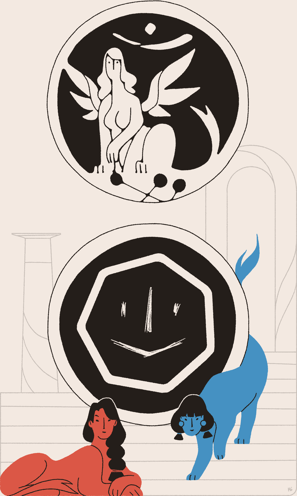

You squint under the bright daylight at the borders of Heaven. Is it brighter than you remember? An emissary awaits your response, having delivered the following message from the Hierophant of Gramater:
Inquirant1 Āyen,
Your services are urgently requested in Gramater. An Incursion of some tenacity has taken hold within our walls, and many of my loyal Saints have been made apostate.
I trust no other Inquirant for this task. My emissary carries a token of how I can reward your efforts.
Your friend,
Lord Hierophant Yald-Samāel
The emissary smiles and places a single coin in your hands.
"Money?" you say, incredulously. "I live in the wastes. What good is money when I can't enter the Holy City to spend—"
You pause. Hierophants are known for their games, and Yald-Samāel especially so. Inspecting the coin, you note it's a new mint, bearing the image of a winged lioness with a woman's face. A sphinx, or, for those who serve Heaven, a Cherub.
On the reverse side is an image of the Throne, but with a crudely carved smiling face on it. A false coin?
No, a message.

The Hierophant is promising a pardon of some kind. Perhaps a good word with the Cherubim who rule the temples of Tsherū? Access to the library and archives beneath? Either would be worth far more than money.
The emissary smiles again, silently asking for your reply.